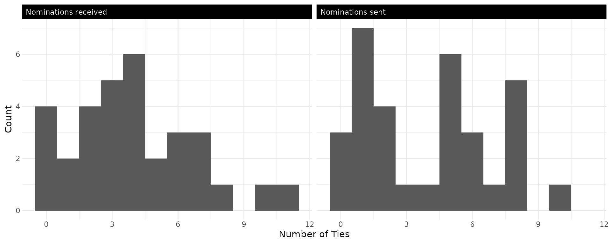
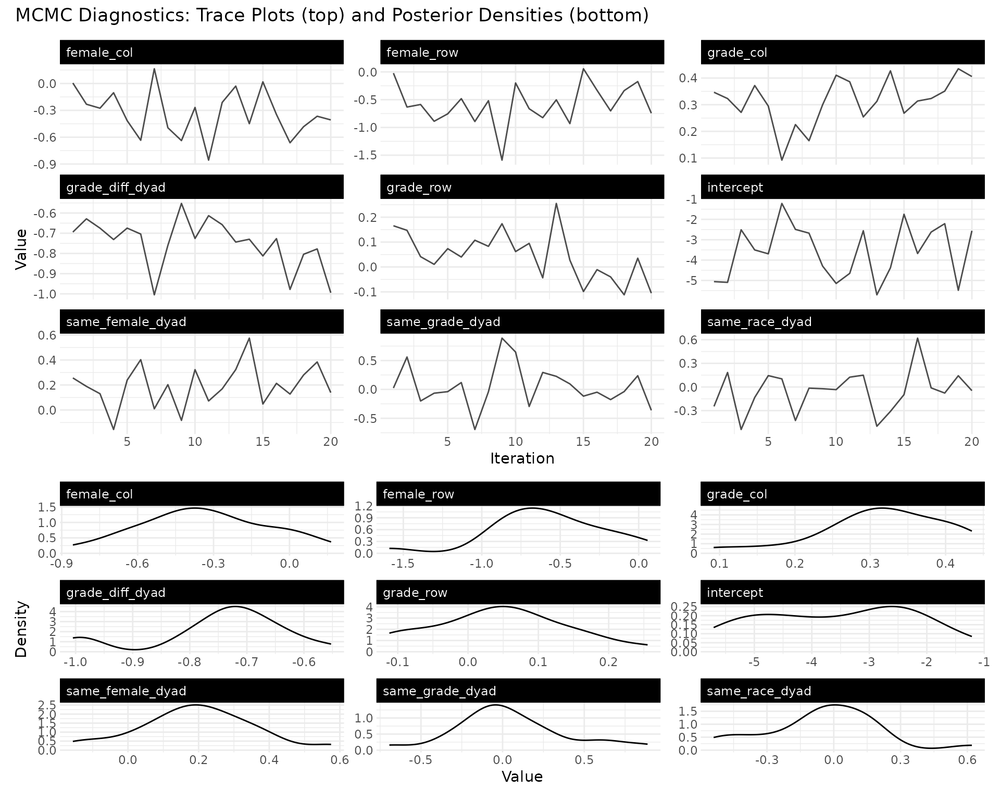
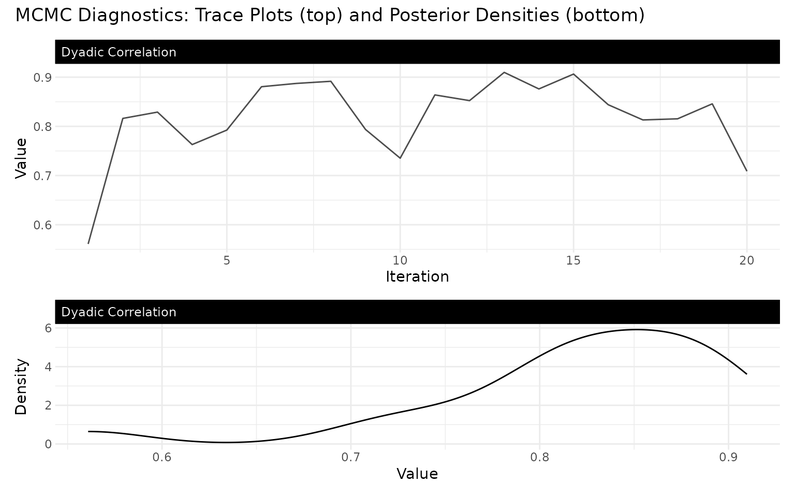
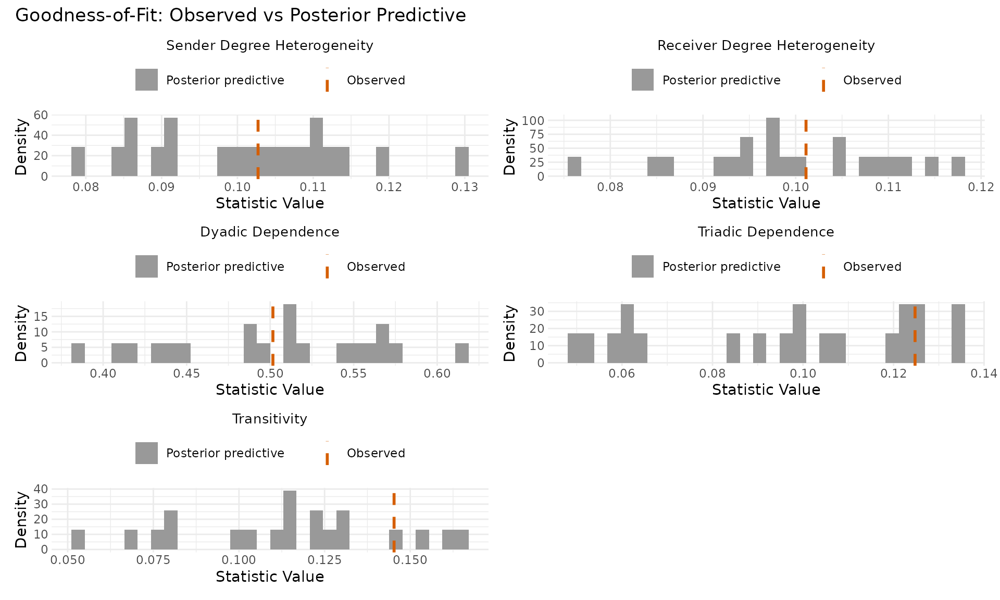
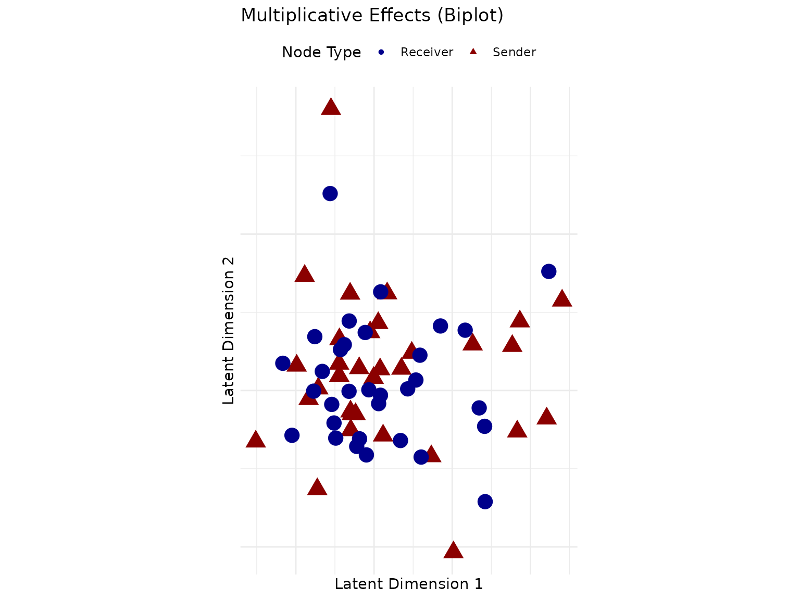
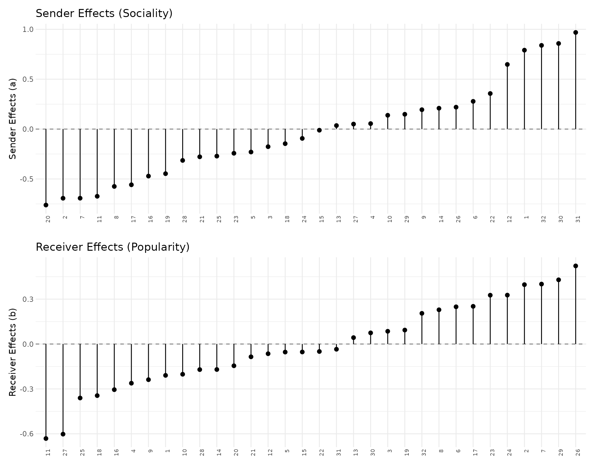
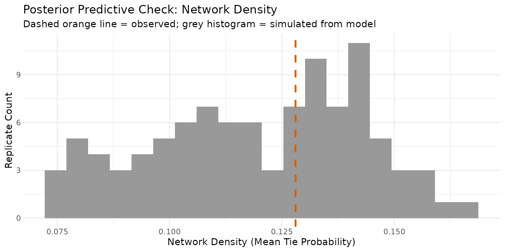

Your First AME Model
Cassy Dorff, Shahryar Minhas, and Tosin Salau
2026-07-21
Source:vignettes/cross_sec_ame.Rmd
cross_sec_ame.RmdWhy Network Models?
Imagine you’re studying friendships in a high school. You have data on who nominated whom as a friend, plus information about each student (gender, race, grade). A natural first instinct is to run a logistic regression: does sharing the same gender predict friendship?
The problem is that friendships aren’t independent observations. Some students are more social (they nominate lots of friends), some are more popular (they receive lots of nominations), and friendships tend to be reciprocated: if Alice names Bob, Bob is more likely to name Alice. A standard regression ignores all of this, and your standard errors will be wrong.
The Additive and Multiplicative Effects (AME) model handles these dependencies directly. It gives each actor a sender effect (, how social they are), a receiver effect (, how popular they are), and a position in a latent space (, ) that captures who tends to connect with whom beyond what the covariates explain. The additive effects enter as ; the latent positions enter multiplicatively as the dot product . Think of it as a regression that takes network structure seriously.
The Data
We’ll analyze a friendship network from the Add Health study, a
longitudinal study of adolescents in the United States. The
addhealthc3 dataset in lame contains a
directed friendship nomination network along with student
characteristics.
library(lame)
library(ggplot2)
set.seed(6886)
# load the Add Health friendship network
data(addhealthc3)
# convert valued network to binary (any nomination = friendship)
Y <- (addhealthc3$Y > 0) * 1
X_nodes <- addhealthc3$X
n <- nrow(Y)
cat("Students:", n, "\n")
#> Students: 32
cat("Friendships:", sum(Y, na.rm = TRUE), "\n")
#> Friendships: 127
cat("Network density:", round(mean(Y, na.rm = TRUE), 3), "\n")
#> Network density: 0.128Notice the na.rm = TRUE calls: network data often has
missing entries (the diagonal is NA because self-ties are
undefined). The model handles missing values internally via data
augmentation, so NAs can stay in the matrix – including
dyads built from missing covariates (here race and
grade have a handful), which ame() likewise
treats as unobserved.
Before modeling: how much do students vary in their number of friends?
out_degree <- rowSums(Y, na.rm = TRUE)
in_degree <- colSums(Y, na.rm = TRUE)
degree_df <- data.frame(
Degree = c(out_degree, in_degree),
Type = rep(c("Nominations sent", "Nominations received"), each = n)
)
ggplot(degree_df, aes(x = Degree)) +
geom_histogram(binwidth = 1) +
facet_wrap(~Type, ncol = 2) +
labs(x = "Number of Ties", y = "Count") +
theme_bw() +
theme(
panel.border = element_blank(),
axis.ticks = element_blank(),
legend.position = "top",
strip.background = element_rect(fill = "black", color = "black"),
strip.text = element_text(color = "white", hjust = 0)
)
Some students are much more social than others, and some much more popular – exactly what the sender and receiver random effects will capture.
Building Covariates
The classic question in friendship networks is homophily: do birds of a feather flock together? We’ll test whether students are more likely to be friends with others of the same gender, race, and grade.
We deliberately include both same_grade (binary) and
grade_diff (continuous: grades apart) to illustrate a
common modeling pitfall, collinearity: they measure nearly the same
thing, and we’ll see the consequences in the results below.
# `outer(x, x, FUN)` builds an n x n matrix whose (i,j) entry is FUN(x[i], x[j]).
# So `outer(female, female, "==")` returns TRUE where students i and j share the
# same gender. Multiplying by 1 converts TRUE/FALSE to 1/0.
#
# homophily indicators: 1 if same, 0 if different
same_female <- outer(X_nodes[,"female"], X_nodes[,"female"], "==") * 1
same_race <- outer(X_nodes[,"race"], X_nodes[,"race"], "==") * 1
same_grade <- outer(X_nodes[,"grade"], X_nodes[,"grade"], "==") * 1
# absolute grade difference; same shape, but a continuous covariate
grade_diff <- abs(outer(X_nodes[,"grade"], X_nodes[,"grade"], "-"))
# pack into a 3D array (n x n x p)
Xdyad <- array(NA, dim = c(n, n, 4))
Xdyad[,,1] <- same_female
Xdyad[,,2] <- same_race
Xdyad[,,3] <- same_grade
Xdyad[,,4] <- grade_diff
dimnames(Xdyad)[[3]] <- c('same_female', 'same_race', 'same_grade', 'grade_diff')
for(k in 1:4) diag(Xdyad[,,k]) <- NA
# nodal covariates (sender and receiver characteristics)
Xrow <- X_nodes[, c("female", "grade")]
Xcol <- X_nodes[, c("female", "grade")]Fitting the Model
Now the fun part. We fit a binary probit AME model with:
- Covariates for homophily effects
- Sender and receiver random effects (sociality / popularity)
- Dyadic correlation (reciprocity)
- 2-dimensional latent space (residual clustering)
A note for ERGM users: what AME assumes
If you’re coming from ergm / statnet, the key difference
is the dependence assumption. ERGM uses change statistics
(e.g. gwesp, triangle, kstar) to
encode unconditional higher-order dependence: changing one tie
shifts the probability of other ties directly. AME instead assumes
conditional dyadic independence: given the additive
effects
,
the latent positions
,
the dyadic correlation
,
and the covariates, all dyads are independent, and higher-order
structure is captured indirectly by integrating over the latent
effects.
Three practical consequences:
-
No degeneracy. AME avoids the model-degeneracy
failure modes of ERGMs with
triangleor unconstrainedkstarterms. -
No change-statistic interpretation of
.
A coefficient on
same_gradeis a partial association on the probit-latent scale, not a log-odds change conditional on the rest of the network. -
Some triangle structure is missed. When transitive
closure is the substantive target (
gwespis the leading example), ERGM is the right tool; for structural pattern + actor heterogeneity + covariate effects with calibrated uncertainty, AME is generally the more stable estimator.
fit <- ame(Y,
Xdyad = Xdyad,
Xrow = Xrow,
Xcol = Xcol,
R = 2, # 2D latent space
family = "binary", # probit model for 0/1 data
rvar = TRUE, # sender random effects
cvar = TRUE, # receiver random effects
dcor = TRUE, # dyadic correlation (reciprocity)
burn = 100, # compact burn-in for this worked example
nscan = 500, # compact post-burn-in run for the vignette
odens = 25, # thinning
verbose = FALSE,
gof = TRUE)What Did We Find?
summary(fit)
#>
#> === AME Model Summary ===
#>
#> Call:
#> [1] "Y ~ intercept + dyad(same_female, same_race, same_grade, grade_diff) + row(female, grade) + col(female, grade) + a[i] + b[j] + rho*e[ji] + U[i,1:2] %*% V[j,1:2], family = 'binary'"
#>
#> Regression coefficients:
#> ------------------------
#> Estimate StdError z_value p_value CI_lower CI_upper
#> intercept -3.565 1.345 -2.651 0.008 -5.602 -1.47 **
#> female_row -0.586 0.373 -1.572 0.116 -1.277 0.019
#> grade_row 0.045 0.098 0.463 0.643 -0.109 0.217
#> female_col -0.334 0.262 -1.276 0.202 -0.764 0.095
#> grade_col 0.314 0.087 3.609 0 0.127 0.431 ***
#> same_female_dyad 0.192 0.171 1.126 0.26 -0.121 0.493
#> same_race_dyad -0.049 0.269 -0.184 0.854 -0.52 0.413
#> same_grade_dyad 0.051 0.361 0.141 0.888 -0.535 0.773
#> grade_diff_dyad -0.749 0.122 -6.13 0 -1 -0.581 ***
#> ---
#> Signif. codes: 0 '***' 0.001 '**' 0.01 '*' 0.05 '.' 0.1 ' ' 1
#> Note: stars are a visual hint from posterior mean / SD only; for inference use the credible intervals.
#>
#> Variance components:
#> -------------------
#> Estimate StdError
#> va 0.426 0.205
#> cab 0.041 0.103
#> vb 0.258 0.092
#> rho 0.819 0.082
#> ve 1.000 0.000
#> (va = sender, cab = sender-receiver covariance, vb = receiver,
#> rho = dyadic correlation, ve = residual variance)Let’s unpack the key results:
Homophily effects. The grade_diff
coefficient is strongly negative and its credible interval excludes
zero: students further apart in grade are much less likely to be
friends. The same_female coefficient is positive (gender
homophily) but its 95% credible interval includes zero – read the sign
as suggestive, not the effect as established. The same_race
coefficient captures race homophily after controlling for grade and
gender.
The collinearity pitfall. same_grade
and grade_diff measure nearly the same thing – a grade
difference of 0 is the same-grade event – so the model cannot
cleanly split the grade signal between them. It still
identifies the dominant effect: grade_diff is strongly
negative and stable from run to run (about -0.75, never near zero). What
suffers is the partition: same_grade is left to absorb a
small, noisy residual bump on top of the linear grade-distance trend.
The lesson is about interpretation, not estimate instability:
include one or the other, not both, so the grade effect lands on a
single, clean coefficient.
Variance components. The sender variance
(va) and receiver variance (vb) quantify how
much students differ in sociality and popularity. The dyadic correlation
(rho) captures reciprocity: values near 1 mean that if A
nominates B, B almost always nominates A back. Reciprocity is strong
here.
For binary networks with a probit link, the coefficients are on the
latent scale, and the textbook
“”
rule for converting them to probability changes is only sharp when the
baseline probability is near 0.5 – which this sparse network is not.
Rather than juggling correction factors, compute the quantity you
actually want with predict(fit, type = "response") and
contrast predicted probabilities under counterfactual covariate
settings.
Did the Sampler Converge?
The model is estimated via MCMC (Markov chain Monte Carlo), so trace plots are the first check that the sampler explored the posterior thoroughly.
trace_plot(fit, params = "beta", ncol = 3)
The regression coefficients are not the whole story, though – the
slowest-mixing term in these fits is usually the dyadic correlation
rho, so it deserves its own trace:
trace_plot(fit, params = "variance", include = "Dyadic Correlation")
What to look for: Traces should fluctuate around a
stable mean (long trends mean non-convergence) and densities should be
smooth and unimodal. This fit stores 20 post-burn-in draws, enough to
illustrate the workflow but not to establish convergence.
rho, the reciprocity parameter, is often slower to mix than
regression coefficients, so inspect it directly and use independent
chains before drawing uncertainty statements from it.
Numerical convergence diagnostics:
posterior::as_draws()
A trace plot is a sanity check, not a diagnostic. The Stan-era
summary triple is
split-,
bulk ESS, and tail ESS;
lame registers an as_draws() method, so the
same posterior-package workflow you would run on a
stanfit works here:
library(posterior)
draws <- posterior::as_draws(fit) # draws_array [iter, chain, var]
posterior::summarise_draws(draws) # mean, sd, q5, q95, rhat,
#> # A tibble: 14 × 10
#> variable mean median sd mad q5 q95 rhat ess_bulk
#> <chr> <dbl> <dbl> <dbl> <dbl> <dbl> <dbl> <dbl> <dbl>
#> 1 intercept -3.57 -3.59 1.34 1.59 -5.50 -1.72 0.951 26.0
#> 2 female_row -0.586 -0.610 0.373 0.361 -0.964 -0.0184 0.975 26.0
#> 3 grade_row 0.0453 0.0406 0.0980 0.0898 -0.105 0.178 1.22 4.63
#> 4 female_col -0.334 -0.356 0.262 0.210 -0.672 0.0256 0.976 26.0
#> 5 grade_col 0.314 0.318 0.0870 0.0770 0.161 0.428 1.11 8.32
#> 6 same_female_dy… 0.192 0.196 0.171 0.154 -0.0868 0.411 0.990 26.0
#> 7 same_race_dyad -0.0494 -0.0279 0.269 0.239 -0.500 0.206 0.969 26.0
#> 8 same_grade_dyad 0.0510 -0.0378 0.361 0.237 -0.378 0.658 0.975 21.4
#> 9 grade_diff_dyad -0.749 -0.728 0.122 0.0792 -0.995 -0.610 1.04 12.7
#> 10 va 0.426 0.397 0.205 0.147 0.228 0.670 0.956 17.5
#> 11 cab 0.0412 0.0174 0.103 0.0830 -0.0833 0.212 0.983 26.0
#> 12 vb 0.258 0.228 0.0918 0.0841 0.156 0.418 1.02 15.5
#> 13 rho 0.819 0.836 0.0820 0.0644 0.701 0.906 1.03 12.1
#> 14 ve 1 1 0 0 1 1 NA NA
#> # ℹ 1 more variable: ess_tail <dbl>
# ess_bulk, ess_tail per paramThe conventional thresholds are
split-
< 1.01 for every monitored parameter and ess_bulk and
ess_tail
400 per chain. This demonstration has only 20 draws from one chain, so
it is not a convergence assessment. Within-chain
split-
can flag a drifting chain, but it cannot reveal independent chains that
settle in different parts of the posterior. One row will look degenerate
in this table: ve is the latent residual variance, fixed at
1 for probit identification, so its draws are constant and
posterior correctly reports NA for
and ESS.
Between-chain
:
ame_parallel(n_chains = 4)
For real convergence assessment, run four chains from different seeds
and let summarise_draws() compute Rhat across chains:
# run this with four chains and longer runs for a convergence assessment
fit_mc <- ame_parallel(
Y, Xdyad = Xdyad, Xrow = Xrow, Xcol = Xcol,
family = "binary", R = 2,
burn = 1000, nscan = 5000, odens = 25,
n_chains = 4, cores = 4, # use available cores when running locally
combine_method = "pool", # pooled fit retains chain identity
verbose = FALSE
)
posterior::summarise_draws(posterior::as_draws(fit_mc))Independent chains provide the comparison a single-chain summary
cannot. Read the resulting
split-,
bulk ESS, and tail ESS together. If a parameter such as rho
remains above the
threshold or has a low ESS, increase the run length and inspect its
traces before using its posterior interval.
The pooled object carries a chain_indicator so
as_draws() keeps chain identity separate; the same reshape
feeds bayesplot::mcmc_trace() and
tidybayes::tidy_draws() directly.
Other quick checks
Two cheap diagnostics worth running once per fit. lame
is a Gibbs / Metropolis-Hastings sampler, not HMC, so it has no
divergences – the closest analog is the per-block failure count exposed
as fit$mh_counters; treat any block with more than 5%
failures as suspicious. And prior_summary(fit) prints the
hyperparameters actually used (defaults filled in), the
cheapest way to catch a typo in a prior = list(...)
override.
str(fit$mh_counters)
#> List of 5
#> $ beta: int 0
#> $ Sab : int 0
#> $ s2 : int 0
#> $ rho : int 0
#> $ UV : int 0
prior_summary(fit)
#>
#> ── Priors in effect (ame fit) ──
#>
#> Regression coefficients: `beta ~ N(0, g * sigma^2 * (X'X)^-1)` (g-prior).
#> `g` (top-level argument) = 992
#> Note: `g` is set at top level on `ame()` -- not inside `prior = list(...)`.
#> `Sab0` = "matrix(0.2032, 0, 0, 0.2032)"
#> `eta0` = "8"
#> `Suv0` = "matrix(0.2032, 0, 0, 0, 0, 0.2032, 0, 0, 0, 0, 0.2032, 0, 0, 0, 0,
#> 0.2032)"
#> `kappa0` = "13"Model comparison: loo() and
loo_compare()
If you refit with save_log_lik = TRUE, the fit carries a
[n_stored, n_obs] pointwise log-likelihood matrix and
loo::loo(fit) works directly via the registered S3
method:
# run this after fitting both candidates with converged chains
fit_ll <- ame(Y, Xdyad = Xdyad, Xrow = Xrow, Xcol = Xcol,
family = "binary", R = 2,
burn = 1000, nscan = 5000, odens = 25,
save_log_lik = TRUE, verbose = FALSE)
# alternative model: drop the dyadic covariate
fit_ll_null <- ame(Y, Xrow = Xrow, Xcol = Xcol,
family = "binary", R = 2,
burn = 1000, nscan = 5000, odens = 25,
save_log_lik = TRUE, verbose = FALSE)
loo_dyad <- loo::loo(fit_ll)
loo_null <- loo::loo(fit_ll_null)
loo_dyad # read the Pareto-k table before any elpd number
loo::loo_compare(list(with_dyad = loo_dyad, no_dyad = loo_null))Start with the
Pareto-
table before reading elpd_diff. In an AME model, each dyad
shares actor-level random effects
(,
,
)
with many others, so leaving one dyad out can produce heavy-tailed
importance weights. When many observations have large
Pareto-
values, use a held-out dyad evaluation or
-fold
cross-validation rather than treating the PSIS-LOO ranking as
decisive.
For the normal, binary, cbin,
poisson, and ordinal families the stored
log-likelihood is the exact family-specific Y density,
so elpd_loo is directly comparable to a loo()
from a brms or rstanarm fit to the same family; see
?loo.ame for the frn rank-likelihood caveat
and fit$log_lik_method.
Does the Model Fit the Data?
Goodness-of-fit (GOF) checks whether the model can reproduce structural features of the observed network – degree heterogeneity, reciprocity, clustering – beyond dyad-level prediction.
gof_plot(fit)
In each panel the grey histogram is the posterior-predictive
distribution from networks simulated out of the fitted model, and the
dashed orange vertical line is the observed value
(colour and linetype dual-encode the contrast so it survives grayscale
printing and colour-blind viewing). See ?gof_plot for the
statistics = ... aliases and the exact column names stored
in fit$GOF.
The observed values for Sender and Receiver Degree Heterogeneity and
for Dyadic Dependence (essentially empirical reciprocity) fall inside
their posterior-predictive histograms – those three features are
explicitly modeled by the random effects, the variance components, and
.
The two triad-level statistics tell a different story: observed Triadic
Dependence sits toward the upper end of its histogram, and observed
Transitivity in the upper tail. AME under-predicts triangle closure on
this network, the expected signature of conditional dyadic independence:
the latent space soaks up some triangle structure through clustering of
the
,
but there is no explicit closure term. If transitivity is your
substantive target, fit an ERGM; if it is a diagnostic concern only,
increasing R sometimes helps modestly.
You can also compute GOF after the fact using the gof()
function, which accepts custom statistics. The built-in
trans.dep panel is a correlation-style clustering
measure; ERGM users will typically want the raw clustering coefficient
(sna::gtrans, the scalar summary that
gwesp(decay = 0, fixed = TRUE) targets), which takes a few
lines as a custom stat:
# classic clustering coefficient: transitive triples / two-paths
trans_ratio <- function(Y) {
Yb <- Y; Yb[is.na(Yb)] <- 0 # NA -> 0 for matrix multiply
YY <- Yb %*% Yb
triangles <- sum(YY * Yb) # transitive triples
two_path <- sum(YY) - sum(diag(YY)) # two-paths (potential triangles)
c(trans_ratio = triangles / max(two_path, 1))
}
gof_custom <- gof(fit, custom_gof = trans_ratio, nsim = 50, verbose = FALSE)
obs <- gof_custom[1, "trans_ratio"]
sim <- gof_custom[-1, "trans_ratio"]
# posterior-predictive p-value (right tail): near 0 = under-predicted
c(observed = round(obs, 3), sim_mean = round(mean(sim), 3),
pp_p_right = round(mean(sim >= obs), 3))
#> observed sim_mean pp_p_right
#> 0.485 0.413 0.105Read this the way you would read ergm::gof():
pp_p_right is the fraction of simulated networks at or
above the observed value, so a value near 0 means the model
under-predicts the statistic. On Add Health it comes back at 0.105 (only
two of the simulated networks reach the observed ratio in this short
run) – the model produces triangles, but rarely concentrates them per
two-path the way the data do, the same structural gap the built-in
panels showed. See ?gof for adding further custom
statistics (raw triangle counts, degree assortativity, and so on).
Visualizing the Latent Space
The multiplicative effects () place each student in a 2D latent space: students near each other in sender space (triangles) nominate similar friends, and students near each other in receiver space (circles) are nominated by similar students. Clusters likely share some unobserved characteristic (same social group, same extracurriculars) that drives friendship choices beyond gender, race, and grade.
uv_plot(fit, layout = "biplot", show.edges = FALSE, label.nodes = FALSE)
Who Are the Most Social / Popular Students?
The additive effects decompose individual heterogeneity into sender effects (sociality) and receiver effects (popularity):
p1 <- ab_plot(fit, effect = "sender", sorted = TRUE,
title = "Sender Effects (Sociality)")
p2 <- ab_plot(fit, effect = "receiver", sorted = TRUE,
title = "Receiver Effects (Popularity)")
library(patchwork)
p1 / p2
Students with large positive sender effects nominate more friends than expected given their covariates; those with large positive receiver effects receive more nominations.
Making Predictions
The model gives you predicted probabilities for every possible tie, useful for link prediction and for understanding dyad-level fit. One caution for sparse networks: predicting “no tie” for every dyad already gets most predictions right, so raw accuracy flatters the model – judge it against the modal-class baseline.
pred_resp <- predict(fit, type = "response")
# how well does the model classify?
Y_vec <- as.vector(Y)
pred_vec <- as.vector(pred_resp)
keep <- !is.na(Y_vec)
# simple classification at threshold 0.5
pred_binary <- (pred_vec[keep] > 0.5) * 1
confusion <- table(Actual = Y_vec[keep], Predicted = pred_binary)
knitr::kable(confusion, caption = "Confusion Matrix (threshold = 0.5)")| 0 | 1 | |
|---|---|---|
| 0 | 849 | 16 |
| 1 | 72 | 55 |
accuracy <- sum(diag(confusion)) / sum(confusion)
baseline <- max(mean(Y_vec[keep]), 1 - mean(Y_vec[keep])) # always-predict-modal-class
cat("\nAccuracy:", round(accuracy, 3),
" | Baseline (predict modal class):", round(baseline, 3),
" | Lift:", round(accuracy - baseline, 3), "\n")
#>
#> Accuracy: 0.911 | Baseline (predict modal class): 0.872 | Lift: 0.039At density ~13% the modal-class baseline is ~0.87, so the relevant question is whether the model’s accuracy is materially above 0.87, not whether it crosses 0.5.
For link prediction, AUC-style metrics evaluate the model’s ability to rank true ties above non-ties across all thresholds. For sparse networks PR-AUC is the more informative summary: a model that always predicts “no tie” already has AUROC near 0.5 but PR-AUC near the network density, so the gap between PR-AUC and density is the metric of substantive interest.
# pROC: ROC curve and AUROC
# install.packages("pROC")
roc_obj <- pROC::roc(response = Y_vec[keep], predictor = pred_vec[keep],
quiet = TRUE)
auroc <- as.numeric(pROC::auc(roc_obj))
# precrec: both ROC and Precision-Recall AUCs (the latter is more
# informative when the positive class is rare, as in friendship networks)
# install.packages("precrec")
ev <- precrec::evalmod(scores = pred_vec[keep], labels = Y_vec[keep])
precrec::auc(ev) # returns AUROC and PR-AUC side-by-side
#> modnames dsids curvetypes aucs
#> 1 m1 1 ROC 0.9238405
#> 2 m1 1 PRC 0.7262662
cat("AUROC:", round(auroc, 3), "\n",
"Baseline AUROC (random ranker):", 0.5, "\n",
"Baseline PR-AUC (density of Y):", round(mean(Y_vec[keep]), 3), "\n")
#> AUROC: 0.924
#> Baseline AUROC (random ranker): 0.5
#> Baseline PR-AUC (density of Y): 0.128Here that gap is wide: PR-AUC 0.719 against a density baseline of 0.128 (roughly five and a half times the base-rate floor), and AUROC 0.921 against 0.5 for a random ranker. Both are in-sample numbers, though – the held-out estimates in the next section are the ones to quote for any predictive claim.
Held-out link prediction
For a held-out evaluation, mask a random subset of dyads to
NA before fitting (the sampler excludes them from the
likelihood via data augmentation), then score
predict(fit, type = "response") on the masked indices.
Stratify the split on Y so the test set contains both
classes.
# 80/20 stratified mask of off-diagonal dyads
set.seed(6886)
off_diag <- which(row(Y) != col(Y) & !is.na(Y))
pos_idx <- off_diag[Y[off_diag] == 1]
neg_idx <- off_diag[Y[off_diag] == 0]
test_idx <- c(sample(pos_idx, round(0.2 * length(pos_idx))),
sample(neg_idx, round(0.2 * length(neg_idx))))
Y_train <- Y
Y_train[test_idx] <- NA # mask test dyads from the likelihood
fit_train <- ame(Y_train, Xdyad = Xdyad, Xrow = Xrow, Xcol = Xcol,
R = 2, family = "binary",
rvar = TRUE, cvar = TRUE, dcor = TRUE,
burn = 30, nscan = 100, odens = 5, # compact vignette run
verbose = FALSE, gof = FALSE)
#> ℹ 92 `Y` cells had a missing covariate and are treated as unobserved
#> (data-augmented).
#> ℹ The covariate coefficients are estimated from the complete dyads only.
pred_train <- predict(fit_train, type = "response")
# `evaluate_heldout()` scores predictions on a logical TEST mask:
# columns n_eval, auroc, auprc, brier, logloss
test_mask <- matrix(FALSE, nrow(Y), ncol(Y),
dimnames = dimnames(Y))
test_mask[test_idx] <- TRUE
evaluate_heldout(y_obs = Y, y_pred = pred_train,
mask = test_mask, family = "binary")
#> n_eval auroc auprc brier logloss
#> 1 198 0.7752601 0.4861729 0.09760101 0.6784308
cat("Test dyads:", length(test_idx),
" | positives:", sum(Y[test_idx] == 1), "\n")
#> Test dyads: 198 | positives: 25On the 198 held-out dyads (25 of them true friendships) the model
posts AUROC 0.775 and PR-AUC 0.486 – a drop from the in-sample 0.921 /
0.719, sharper for PR-AUC, but both numbers stay well clear of chance,
the reassuring signal that the fit generalizes rather than memorizing
the training dyads. PR-AUC is the number to weigh: a random ranker’s
PR-AUC equals the positive rate (about 0.13), so the model’s precision
runs nearly four times chance on dyads it never saw. With only 25
positive test dyads and a single short chain, read these as a sanity
check rather than a benchmark – report the positive count alongside
them, and see ?evaluate_heldout for the metric definitions
and options.
Simulating from the Model
You can generate new networks from the fitted posterior. A posterior predictive check asks: does a network simulated from posterior draws look like the observed one on a feature you care about (here, overall density)? Observed values inside the simulated distribution mean the model reproduces that feature; values in a tail mean it is missing something.
sims <- simulate(fit, nsim = 100)
# compare simulated vs observed density
sim_densities <- sapply(sims$Y, function(y) mean(y, na.rm = TRUE))
obs_density <- mean(Y, na.rm = TRUE)
ggplot(data.frame(density = sim_densities), aes(x = density)) +
geom_histogram(bins = 20, fill = "grey60") +
# dual-encode the observed density as colour AND linetype so the cue
# survives greyscale printing and colour-blind viewing (Okabe-Ito orange).
geom_vline(xintercept = obs_density,
color = "#D55E00", linewidth = 1, linetype = "dashed") +
labs(title = "Posterior Predictive Check: Network Density",
subtitle = "Dashed orange line = observed; grey histogram = simulated from model",
x = "Network Density (Mean Tie Probability)", y = "Replicate Count") +
theme_bw() +
theme(panel.border = element_blank(), axis.ticks = element_blank(),
legend.position = "top")
Practical Tips
Choosing R (latent dimensions). Start with R = 0 (no
latent space), then try R = 1 and R = 2 and compare GOF.
ame() / lame() warn when
R > floor(n/3) because at that rank the multiplicative
effects absorb structure that belongs to the additive effects; in
practice R = 2 or R = 3 is the right
default.
MCMC settings. For exploratory work,
burn = 500, nscan = 2000, odens = 25 is fine. For a final
run, use at least burn = 2000, nscan = 10000, odens = 25
and check convergence with trace_plot().
Variance components. Include
rvar = TRUE and cvar = TRUE unless you have a
specific reason not to. Include dcor = TRUE for directed
networks where reciprocity is plausible.
What’s Next?
- Multiple time periods? See the lame overview for longitudinal models
- Two types of nodes? See the bipartite vignette
- Evolving network structure? See the dynamic effects vignette
-
Other data types? See
?amefor the supportedfamilyoptions